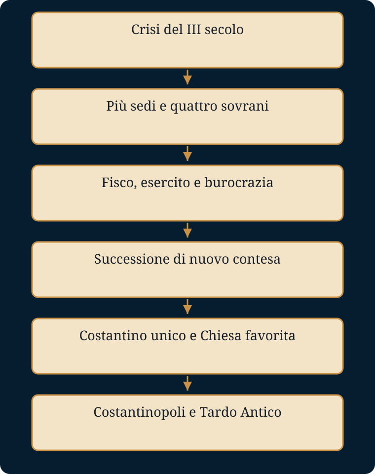

Come sopravvive un impero quando non può più tornare al suo ordine precedente?
Luoghi e tempi. Nicomedia, Milano, Treviri e area danubiana sono sedi strategiche della tetrarchia. Roma, ponte Milvio, Nicea e Costantinopoli scandiscono l’affermazione di Costantino.
- Mondo precedente
- La monarchia militare del III secolo affronta crisi simultanee e risorse insufficienti.
- Fratture
- Frammentazione, inflazione e usurpazioni rendono insufficiente la sola vittoria sul rivale.
- Attori e conflitti
- Tetrarchi, dinastie, eserciti, curiali, coloni e comunità cristiane partecipano a una trasformazione diseguale.
- Processo e cause
- Più sedi e uffici migliorano la capacità di risposta, ma richiedono entrate e controlli maggiori.
- Conseguenze
- Lo Stato tardoantico conserva la struttura romana cambiando linguaggio religioso e baricentro.
- Risposta alla domanda
- La sopravvivenza avviene attraverso la trasformazione delle istituzioni, non con il ritorno alla Repubblica o al Principato originario.
La dispensa integrale
Testo originale di gbprof e Libera, comprese le attività e le tabelle. Le sezioni introduttiva e conclusiva di questa pagina sono strumenti aggiunti. Scarica il Word originale.
ROMA CAMBIA VOLTO
Diocleziano e Costantino
nel passaggio dall’Impero antico al mondo tardoantico
DISPENSA DIDATTICA
Racconto storico • schemi • vocabolario • saperi irrinunciabili • domande aperte
Un lavoro di gbprof e Libera
Edizione didattica
Come usare questa dispensa
La struttura • Parte I: il racconto storico completo, conservato senza modifiche. • Parte II: tredici schede di studio, una per ogni capitolo del racconto. • Parte III: cronologia, sintesi complessiva e confronto finale fra imperatori e pretendenti. |
Metodo di studio consigliato • Leggi un capitolo del racconto senza interromperti. • Ricostruisci lo schema causa → evento → conseguenza. • Memorizza i saperi irrinunciabili e usa il vocabolario per spiegare i termini con parole tue. • Rispondi alle domande aperte usando sempre informazioni precise tratte dal racconto. |
Indice
PARTE I — IL RACCONTO STORICO
1. Un impero troppo grande per un solo uomo
2. Il secolo della paura
3. L’uomo venuto dalla Dalmazia
4. La macchina del nuovo Impero
5. Difendere ogni frontiera
6. Il prezzo dell’ordine
7. L’imperatore diventa lontano
8. Il giorno dell’abdicazione
9. Costantino e la strada verso Roma
10. Il nuovo alleato dell’Impero
11. L’imperatore unico
12. La Nuova Roma
13. Due imperatori, una sola trasformazione
PARTE II — SCHEDE DIDATTICHE
PARTE III — QUADRI DI SINTESI E CONFRONTO
PARTE I
IL RACCONTO STORICO
Testo conservato integralmente e senza modifiche
Prima di entrare nel racconto
Quello che segue è un racconto storico: non un romanzo e non una semplice esposizione schematica. I personaggi, le date, le guerre, le leggi e le trasformazioni descritte appartengono alla storia. Le scene d’ambiente e i passaggi narrativi servono a rendere comprensibile il movimento degli eventi, ma non inventano dialoghi attribuiti come autentici né presentano come certe intenzioni che le fonti non permettono di conoscere.
La vicenda comincia nel III secolo d.C., quando l’Impero romano sembrò vicino alla disgregazione, e termina con Costantino, che ricostruì l’unità politica, favorì il cristianesimo e fondò Costantinopoli. Fra i due estremi si compì una trasformazione decisiva: Roma non tornò più a essere quella di Augusto. Sopravvisse, ma cambiando profondamente forma.
1. Un impero troppo grande per un solo uomo
All’inizio del III secolo l’Impero romano appariva ancora immenso. Le sue strade attraversavano tre continenti, le sue navi solcavano il Mediterraneo, le sue legioni sorvegliavano confini che andavano dalla Britannia alle sabbie della Siria. Roma continuava a essere la capitale simbolica del mondo, il luogo da cui sembrava dipendere ogni decisione. Eppure, dietro la grandezza, il sistema costruito nei secoli precedenti cominciava a mostrare crepe sempre più profonde.
Augusto aveva fondato il suo potere su una finzione abilissima. Formalmente, la repubblica continuava a esistere: il Senato si riuniva, i magistrati venivano nominati, le antiche cariche conservavano i loro nomi. In realtà, il princeps concentrava nelle proprie mani l’autorità militare, politica e religiosa. Per molto tempo quel compromesso aveva funzionato. Ma nel III secolo le condizioni erano cambiate. I confini erano minacciati nello stesso momento da popolazioni diverse, gli eserciti provinciali erano diventati arbitri della successione e l’apparato amministrativo non riusciva più a governare efficacemente un territorio tanto vasto.
Quando un imperatore moriva, non esisteva una regola sicura che stabilisse chi dovesse succedergli. Il Senato poteva riconoscere un nuovo sovrano, ma spesso erano i soldati a decidere. Ogni esercito tendeva ad acclamare il proprio comandante; ogni comandante vittorioso poteva diventare un pretendente. L’imperatore non era più soltanto colui che governava Roma: era soprattutto colui che riusciva a mantenere la fedeltà delle legioni.
La dinastia dei Severi aveva già reso evidente questa trasformazione. Settimio Severo, salito al potere dopo una guerra civile, governò appoggiandosi direttamente all’esercito. Aumentò le paghe dei soldati e rafforzò il carattere militare della monarchia. Suo figlio Caracalla, nel 212, concesse la cittadinanza romana a quasi tutti gli uomini liberi dell’Impero. Il provvedimento ampliò l’integrazione giuridica dei provinciali e accrebbe anche il numero di coloro che erano soggetti ad alcune imposte riservate ai cittadini. Non fu soltanto un espediente fiscale, ma mostrò che la distinzione fra Roma e le province stava ormai perdendo il significato antico.
Nel 235, con l’uccisione di Alessandro Severo da parte dei suoi stessi soldati, il fragile equilibrio si spezzò. Cominciò un’epoca che gli storici chiamano “anarchia militare”. In meno di cinquant’anni si susseguirono molti imperatori, usurpatori e comandanti rivali. Quasi tutti conquistarono il potere con le armi; molti morirono nello stesso modo. L’Impero sembrò trasformarsi in un campo militare senza un comandante riconosciuto da tutti.
2. Il secolo della paura
Le notizie viaggiavano lentamente, ma le minacce si muovevano in fretta. Lungo il Reno e il Danubio, gruppi germanici penetravano oltre le fortificazioni. A Oriente, la nuova dinastia persiana dei Sasanidi costruiva uno Stato potente e aggressivo, deciso a contendere a Roma il controllo dell’Armenia, della Mesopotamia e della Siria.
Nel 260 accadde qualcosa che i Romani avrebbero considerato impensabile: l’imperatore Valeriano fu catturato vivo dal re persiano Sapore I. L’immagine del sovrano romano prigioniero del nemico divenne il simbolo dell’umiliazione dell’Impero. Nello stesso periodo, le province occidentali si organizzarono in un’entità autonoma, il cosiddetto Impero delle Gallie, mentre a Oriente la città di Palmira, sotto Odenato e poi sotto la regina Zenobia, costruì un proprio dominio.
Per qualche anno il mondo romano apparve diviso in tre. Al centro rimaneva il governo imperiale; a Occidente le Gallie, la Britannia e per un periodo la Hispania seguivano propri imperatori; a Oriente Palmira controllava vaste regioni. Non era ancora la fine di Roma, ma era la prova che il centro non riusciva più a proteggere tutte le periferie.
La guerra produceva altra guerra. Gli eserciti avevano bisogno di denaro, viveri, cavalli, armi. Gli imperatori ridussero progressivamente la quantità di argento contenuta nelle monete per coniarne un numero maggiore. Il risultato fu una crescente perdita di fiducia nella moneta. I prezzi aumentarono, gli scambi divennero più difficili e lo Stato cominciò a esigere una parte delle imposte direttamente in natura: grano, animali, tessuti, prodotti necessari alle truppe.
Le campagne subirono saccheggi, requisizioni ed epidemie. Molti terreni furono abbandonati. Quando diminuivano i contadini e le terre coltivate, diminuivano anche le entrate fiscali; per compensare, il peso delle imposte ricadeva più duramente su chi era rimasto. Era un circolo vizioso: lo Stato aveva bisogno di maggiori risorse proprio mentre la società ne produceva di meno.
Alcuni imperatori riuscirono a fermare temporaneamente il disastro. Aureliano riconquistò l’Impero delle Gallie e sconfisse Palmira, restituendo unità al territorio romano. Fece anche costruire nuove mura intorno a Roma, un gesto che rivelava la profondità della crisi: la città che per secoli aveva dominato il Mediterraneo ora temeva di essere assalita. Quando Aureliano fu assassinato nel 275, risultò chiaro che una vittoria militare non bastava. Era necessario cambiare il modo stesso in cui l’Impero veniva governato.
3. L’uomo venuto dalla Dalmazia
Nel 284, presso Nicomedia, le truppe acclamarono imperatore un ufficiale di origine dalmata: Diocle, che una volta salito al potere assunse il nome di Diocleziano. Non apparteneva alle grandi famiglie senatoriali. Era cresciuto nell’esercito e conosceva dall’interno il mondo dei comandi, delle campagne e delle rivalità fra generali.
Diocleziano comprese che non era possibile restaurare semplicemente il passato. Il problema non consisteva nel trovare un imperatore più energico degli altri; era l’intero sistema a essere diventato inadeguato. Nessun uomo poteva trovarsi contemporaneamente sul Reno, sul Danubio, in Egitto e sulla frontiera persiana. Nessun sovrano poteva governare territori tanto lontani affidandosi a una capitale distante dai principali teatri di guerra.
La sua risposta fu graduale. Prima associò al potere Massimiano, un generale di cui si fidava. Nel 286 lo elevò al rango di Augusto, affidandogli soprattutto l’Occidente. Non si trattava di dividere legalmente l’Impero in due Stati: le vittorie, le leggi e l’autorità imperiale continuavano a essere presentate come comuni. Ma il governo diventava concretamente più vicino ai fronti.
Nel 293 il sistema fu ampliato. Ai due Augusti furono affiancati due Cesari, sovrani di rango inferiore destinati a collaborare con loro e, in prospettiva, a succedergli. Diocleziano scelse Galerio; Massimiano scelse Costanzo Cloro. Nacque così la tetrarchia, il “governo dei quattro”.
Le sedi imperiali si spostarono verso le zone strategiche: Nicomedia per Diocleziano, Milano per Massimiano, Sirmio o Tessalonica per Galerio, Treviri per Costanzo Cloro. Roma rimaneva il cuore simbolico dell’Impero, ma non era più il luogo necessario del comando. Gli imperatori vivevano vicino agli eserciti e ai confini, dove le decisioni dovevano essere prese rapidamente.
Diocleziano voleva anche risolvere il problema della successione. L’idea era che i Cesari potessero diventare Augusti e scegliere a loro volta nuovi collaboratori. In questo modo il potere non avrebbe dovuto dipendere dalla nascita né dall’acclamazione casuale di un esercito. Il progetto era razionale; forse troppo razionale per un mondo nel quale i soldati continuavano a riconoscere un valore decisivo ai legami dinastici e personali.
4. La macchina del nuovo Impero
La tetrarchia non fu soltanto una nuova distribuzione delle cariche. Diocleziano ricostruì l’Impero come una vasta macchina amministrativa. Le grandi province, che in passato avevano concentrato nelle mani di pochi governatori notevoli risorse civili e militari, vennero divise in unità più piccole. Il loro numero aumentò considerevolmente. Le province furono poi raggruppate in circoscrizioni più ampie, chiamate diocesi, affidate a funzionari incaricati di controllare l’amministrazione locale.
La riforma aveva due obiettivi. Il primo era rendere il governo più presente sul territorio. Il secondo era impedire che un governatore diventasse tanto potente da ribellarsi. In molte aree, il comando civile fu separato da quello militare: chi amministrava le tasse e la giustizia non doveva controllare anche le truppe.
L’Italia perse progressivamente i privilegi che la distinguevano dalle province. Anche la penisola venne inserita nel nuovo sistema amministrativo e fiscale. Era un cambiamento enorme. Per secoli l’Italia aveva rappresentato il centro dominante, mentre le province sostenevano gran parte del peso tributario. Ora l’Impero tendeva a trattare tutti i territori secondo regole più uniformi.
Per finanziare l’esercito e la burocrazia, lo Stato aveva bisogno di conoscere le risorse disponibili. Furono rafforzati i censimenti delle terre e delle popolazioni. La tassazione venne organizzata collegando la capacità produttiva del suolo alla manodopera che poteva coltivarlo. Le modalità variarono nelle diverse regioni e si svilupparono nel tempo, ma il principio era chiaro: lo Stato cercava di prevedere quanto ogni territorio potesse fornire.
Questo sistema rese il prelievo più regolare, ma anche più pesante. Le comunità locali dovevano garantire la riscossione. I curiali, cioè i membri delle élite cittadine, erano responsabili delle somme richieste al loro territorio e potevano essere costretti a coprire personalmente gli ammanchi. Quello che un tempo era stato un onore civico cominciò a trasformarsi in un obbligo temuto.
Nelle campagne aumentò la tendenza a trattenere i lavoratori sulle terre registrate dal fisco. Non nacque in un solo momento una “servitù della gleba”, e i coloni non erano ancora servi medievali. Tuttavia, tra Diocleziano, Costantino e i loro successori, le leggi limitarono sempre più la possibilità dei contadini dipendenti di abbandonare i fondi. La necessità fiscale contribuì così a rendere la società più rigida.
5. Difendere ogni frontiera
La riforma dello Stato sarebbe stata inutile senza un esercito capace di difenderlo. Diocleziano aumentò gli effettivi, rafforzò le fortificazioni e distribuì le forze in modo più articolato. Una parte delle truppe presidiava stabilmente le frontiere; altre unità potevano accompagnare gli imperatori e intervenire nei punti di crisi. La distinzione fra esercito di confine ed esercito mobile sarebbe diventata ancora più netta sotto Costantino.
I tetrarchi combatterono su fronti diversi. Costanzo Cloro riconquistò la Britannia, dove l’ammiraglio Carausio e poi Alletto avevano creato un potere indipendente. Massimiano intervenne in Africa e lungo il Reno. Galerio affrontò i Sasanidi e, dopo una grave sconfitta iniziale, ottenne una vittoria importante che rafforzò la posizione romana in Oriente.
Diocleziano si recò in Egitto, dove una ribellione aveva sottratto Alessandria al controllo imperiale. La città fu assediata e riconquistata nel 298. Anche l’Egitto, che fin dall’età di Augusto aveva conservato caratteristiche amministrative particolari, venne inserito più strettamente nel nuovo ordinamento.
Alla fine del III secolo, l’Impero non era tornato pacifico nel senso antico del termine. Restava circondato da nemici e attraversato da tensioni. Ma il governo reagiva con maggiore rapidità. I quattro sovrani si presentavano come membri di un’unica famiglia imperiale, legata da adozioni, matrimoni e una comune missione.
Sui monumenti tetrarchici le figure degli imperatori appaiono quasi identiche. Non conta il volto individuale, ma il collegio. I quattro si abbracciano, indossano la stessa armatura, condividono la stessa autorità. Era un messaggio politico: l’Impero non dipendeva più dal carisma di un solo uomo, ma da un ordine che pretendeva di essere stabile e superiore alle ambizioni personali.
6. Il prezzo dell’ordine
La ricostruzione aveva un costo enorme. Più soldati, più funzionari, più sedi imperiali significavano maggiori spese. Diocleziano tentò di riformare la moneta e di rendere più regolare il sistema fiscale, ma l’inflazione non scomparve.
Nel 301 venne promulgato l’Editto dei prezzi massimi. Il testo stabiliva il prezzo oltre il quale non potevano essere venduti centinaia di prodotti e fissava limiti anche per salari e trasporti. Il preambolo accusava l’avidità dei commercianti e degli speculatori; le pene previste erano severissime.
L’editto mostra la volontà del governo di controllare una crisi che colpiva soprattutto i soldati e le popolazioni urbane. Ma fissare un prezzo per legge non significava creare le merci mancanti né ristabilire la fiducia nella moneta. L’applicazione fu difficile e probabilmente diseguale. In molte zone il provvedimento rimase senza effetti duraturi e venne abbandonato.
Il nuovo Stato chiedeva molto ai suoi abitanti. Le professioni considerate essenziali tendevano a diventare ereditarie; i figli potevano essere spinti a continuare il mestiere dei padri. Le comunità dovevano garantire uomini, viveri e denaro. Era il tentativo di fermare il movimento di una società in crisi, bloccando persone e risorse là dove il fisco le aveva registrate.
L’ordine dioclezianeo salvò lo Stato dalla disgregazione immediata, ma ridusse gli spazi di autonomia. La cittadinanza romana, che un tempo aveva significato partecipazione e privilegio, tendeva ora a coincidere con l’appartenenza a una struttura che imponeva doveri sempre più precisi. Roma sopravviveva perché era diventata più forte; ma diventava più forte rendendo la società più controllata.
7. L’imperatore diventa lontano
Anche l’immagine del sovrano cambiò. Augusto aveva voluto presentarsi come il primo dei cittadini. Diocleziano volle invece rendere evidente la distanza fra l’imperatore e i sudditi. La corte adottò cerimonie più solenni; l’accesso al sovrano divenne regolato da funzionari e rituali; le insegne imperiali si caricarono di oro e porpora.
Diocleziano si collegò simbolicamente a Giove e assunse l’appellativo di Iovius; Massimiano fu associato a Ercole e chiamato Herculius. Il messaggio era gerarchico: come Ercole eseguiva sulla terra la volontà di Giove, così Massimiano operava accanto a Diocleziano all’interno di un ordine sacro.
Gli storici chiamano spesso “Dominato” la nuova forma del potere, contrapponendola al Principato. La separazione non fu improvvisa e assoluta: molte trasformazioni erano cominciate prima e continuarono dopo. Tuttavia, il linguaggio politico era ormai diverso. L’imperatore non aveva più bisogno di fingere di essere soltanto un magistrato repubblicano. Governava come dominus, signore di un apparato che si presentava come necessario alla salvezza del mondo romano.
Questa sacralizzazione entrò in conflitto con i cristiani. Essi erano ormai presenti nelle città, nelle campagne, nell’esercito e talvolta nelle stesse élite. Non rifiutavano necessariamente l’autorità politica, ma non potevano sacrificare agli dèi tradizionali né riconoscere una natura divina all’imperatore.
Nel 303 cominciò la cosiddetta Grande persecuzione. Furono ordinati la distruzione di edifici di culto, la consegna dei libri sacri, la perdita di diritti per i cristiani e l’arresto del clero. In seguito, in varie regioni, venne imposto il sacrificio agli dèi. L’intensità della persecuzione non fu uniforme: fu più dura in Oriente e più limitata in alcune zone occidentali.
La repressione produsse martiri, divisioni interne alle comunità e un’enorme memoria di sofferenza. Ma non eliminò il cristianesimo. Al contrario, mostrò che la nuova religione era troppo radicata per essere cancellata con un decreto. Nel 311 lo stesso Galerio, ormai gravemente malato, emanò un editto di tolleranza che pose termine alla persecuzione nei territori da lui controllati. Era il segno del fallimento di una politica.
8. Il giorno dell’abdicazione
Il 1° maggio del 305 accadde un fatto rarissimo: Diocleziano abdicò. Anche Massimiano, sebbene meno convinto, lasciò il potere. I Cesari Galerio e Costanzo Cloro divennero Augusti; due nuovi Cesari, Severo e Massimino Daia, entrarono nel collegio.
Diocleziano si ritirò nel grande palazzo che aveva fatto costruire presso Salona, sulla costa dalmata. Sembrava la prova definitiva che la tetrarchia funzionasse: il fondatore aveva lasciato il potere senza essere assassinato e la successione era avvenuta secondo un piano prestabilito.
Ma il sistema non aveva tenuto conto della forza delle dinastie. Costanzo Cloro aveva un figlio, Costantino, cresciuto per anni alla corte orientale e divenuto ufficiale. Massimiano aveva un figlio, Massenzio. Nessuno dei due era stato scelto come Cesare. Per i soldati e per molte élite, tuttavia, il sangue imperiale continuava ad avere un peso che nessun progetto amministrativo poteva cancellare.
Nel 306 Costanzo Cloro morì a Eboracum, l’odierna York, durante una campagna in Britannia. Le truppe acclamarono immediatamente Costantino. Poco dopo, a Roma, Massenzio si fece proclamare imperatore con l’appoggio della guardia pretoriana e di ambienti cittadini ostili alle riforme fiscali.
In pochi mesi l’ordine tetrarchico cominciò a disgregarsi. Gli Augusti e i Cesari ufficiali convivevano con sovrani acclamati dagli eserciti. Massimiano tornò sulla scena. Severo fu sconfitto e ucciso. Il convegno di Carnunto del 308 tentò di ricomporre il sistema, ma creò nuovi titoli senza eliminare le rivalità.
Diocleziano rifiutò di riprendere il potere. Il mondo che aveva costruito gli sopravviveva nelle province, nel fisco e nell’esercito, ma non nella successione. La tetrarchia aveva dimostrato che quattro sovrani potevano amministrare l’Impero; non aveva trovato il modo di impedire che ciascuno volesse diventare l’unico.
9. Costantino e la strada verso Roma
Costantino non conquistò l’Impero in un solo giorno. Per anni consolidò il proprio potere in Gallia e in Britannia, combatté lungo il Reno e costruì un’immagine di sovrano vittorioso. Come gli altri pretendenti, usò simboli religiosi diversi nel corso del tempo. La sua adesione al cristianesimo non fu un gesto semplice né immediatamente definibile in tutti i suoi aspetti.
Nel 312 decise di marciare contro Massenzio, che controllava Roma e l’Italia. Attraversò le Alpi e vinse una serie di battaglie. Il 28 ottobre i due eserciti si affrontarono presso il ponte Milvio, lungo il Tevere.
Le fonti cristiane, scritte in forme differenti, raccontano che Costantino ricevette un segno divino prima dello scontro e fece porre un simbolo cristiano sugli scudi o sulle insegne. Non possiamo ricostruire con certezza ogni dettaglio dell’esperienza. È però certo che, dopo la vittoria, Costantino collegò sempre più chiaramente il proprio successo alla protezione del Dio dei cristiani.
Massenzio morì nelle acque del Tevere durante la fuga. Costantino entrò a Roma da vincitore. Il Senato gli dedicò l’arco che ancora oggi porta il suo nome, celebrandolo come liberatore della città. La propaganda evitò inizialmente di presentare la vittoria come un attacco frontale alla religione tradizionale, ma il rapporto fra l’imperatore e il cristianesimo era ormai cambiato.
Nel 313 Costantino incontrò a Milano Licinio, il sovrano che avrebbe controllato l’Oriente dopo la sconfitta di Massimino Daia. I due stabilirono una politica di libertà religiosa e ordinarono la restituzione ai cristiani dei beni confiscati durante la persecuzione. Il provvedimento è tradizionalmente chiamato “Editto di Milano”, anche se il documento conservato è una lettera imperiale applicativa e non un editto nel senso più rigoroso.
Il cristianesimo non diventò allora religione ufficiale dell’Impero. I culti tradizionali continuarono a essere praticati e Costantino mantenne a lungo titoli e simboli compatibili con la tradizione pagana. Ma la svolta era reale: la Chiesa passava dalla persecuzione al favore imperiale.
10. Il nuovo alleato dell’Impero
Costantino concesse privilegi al clero, restituì proprietà, finanziò edifici di culto e riconobbe ai vescovi un ruolo crescente nella vita pubblica. A Roma sorsero grandi basiliche cristiane, costruite spesso ai margini del centro monumentale pagano. Il cristianesimo riceveva così uno spazio visibile nella città imperiale.
La scelta non può essere ridotta a un semplice calcolo. Costantino fu certamente un politico capace di comprendere la forza organizzativa della Chiesa; ma le fonti indicano anche una convinzione religiosa personale, maturata nel tempo e difficile da separare dalle categorie del potere antico. Per lui la vittoria, l’unità dell’Impero e il favore del Dio supremo appartenevano allo stesso disegno.
Il rapporto con la Chiesa creò però un nuovo problema. I cristiani non erano un blocco uniforme. Discutevano sulla natura di Cristo, sull’autorità dei vescovi, sulla riammissione di chi aveva ceduto durante le persecuzioni. In Africa lo scontro donatista divise le comunità; in Oriente la predicazione del presbitero Ario provocò una controversia ancora più ampia.
Ario sosteneva che il Figlio non fosse eterno nello stesso modo del Padre, ma avesse ricevuto da lui l’esistenza. I suoi avversari vedevano in questa dottrina una minaccia alla piena divinità di Cristo. La disputa attraversò città, episcopati e comunità, trasformandosi anche in un problema politico.
Nel 325 Costantino convocò a Nicea un concilio di vescovi provenienti soprattutto dall’Oriente. L’imperatore non elaborò personalmente la teologia del concilio, ma volle che si raggiungesse un accordo. L’assemblea condannò Ario e affermò che il Figlio era della stessa sostanza del Padre, usando il termine greco homoousios.
Nicea non chiuse definitivamente la controversia. Negli anni successivi cambiarono alleanze, esili e formule dottrinali; lo stesso Costantino ebbe rapporti con vescovi vicini ad Ario e fu battezzato soltanto poco prima di morire da Eusebio di Nicomedia. Il concilio mostrò tuttavia una novità destinata a durare: l’imperatore considerava l’unità religiosa parte dell’ordine pubblico e si attribuiva il compito di favorirla.
11. L’imperatore unico
Dopo il 313, l’Impero era governato da Costantino in Occidente e Licinio in Oriente. La collaborazione durò poco. I due sovrani si affrontarono più volte, firmarono tregue e tornarono a preparare la guerra.
Nel 324 Costantino ottenne la vittoria decisiva. Licinio fu sconfitto prima presso Adrianopoli e poi a Crisopoli, sul versante asiatico del Bosforo. Dopo quasi vent’anni di conflitti, Costantino rimase unico imperatore.
La tetrarchia era terminata, ma molte riforme di Diocleziano restavano in vita. Costantino mantenne la divisione amministrativa in province e diocesi, sviluppò la burocrazia, separò più nettamente le carriere civili da quelle militari e rafforzò l’esercito mobile, i comitatenses, vicino alla corte. Le truppe di frontiera, i limitanei, continuarono a presidiare il limes.
Anche il potere imperiale conservò il carattere assoluto e sacro costruito nel secolo precedente. Cambiò però il linguaggio religioso. L’imperatore non si presentava più come protetto di Giove secondo il modello tetrarchico; attribuiva la propria missione al Dio cristiano, pur governando ancora una società in larga parte non cristiana.
Sul piano monetario, Costantino diffuse il solidus d’oro, una moneta stabile che sarebbe rimasta fondamentale per secoli nell’Impero d’Oriente. La riforma rafforzò le finanze dello Stato e gli scambi di alto livello, ma non eliminò le difficoltà della popolazione che usava monete di valore inferiore. La società tardoantica rimase segnata da forti disuguaglianze.
Le leggi continuarono a vincolare gruppi sociali e professioni alle loro funzioni. Nel 332, per esempio, un provvedimento stabilì che i coloni fuggiti dovessero essere restituiti ai proprietari delle terre cui erano legati. Non era ancora il feudalesimo, ma era un passo importante verso una società nella quale la libertà di movimento dei lavoratori agricoli risultava sempre più limitata.
12. La Nuova Roma
Costantino aveva vinto l’ultima guerra civile vicino al Bosforo. Proprio lì decise di costruire la capitale del suo Impero. Scelse Bisanzio, antica città greca posta in una posizione straordinaria: controllava il passaggio fra Europa e Asia e la via marittima fra il Mediterraneo e il Mar Nero.
La decisione non nacque dal nulla. Diocleziano e gli altri tetrarchi avevano già mostrato che l’imperatore doveva risiedere vicino ai confini e alle regioni economicamente più importanti. Roma era lontana dal Danubio e dall’Oriente, i due grandi fronti strategici del IV secolo. Bisanzio, invece, guardava contemporaneamente ai Balcani e all’Asia Minore.
La città venne ampliata con mura, palazzi, piazze, terme, un ippodromo e un nuovo Senato. Statue e opere d’arte furono trasferite da molte regioni dell’Impero. L’11 maggio del 330 la capitale fu inaugurata. Ufficialmente era la “Nuova Roma”; nella memoria collettiva divenne Costantinopoli, la città di Costantino.
La nuova capitale non fu fin dall’inizio una città esclusivamente cristiana. Conservava elementi della cultura classica e ospitava monumenti, rituali e popolazioni differenti. Ma il suo futuro sarebbe stato inseparabile dal cristianesimo e dall’Impero romano d’Oriente.
Roma non cessò di essere importante. Rimase la città del Senato, della tradizione, dei grandi monumenti e, sempre più, del vescovo che avrebbe assunto un ruolo centrale nella Chiesa occidentale. Tuttavia, il baricentro politico si era spostato. L’Oriente era più urbanizzato, più ricco e più vicino alle principali minacce militari.
Con Costantinopoli, la trasformazione cominciata sotto Diocleziano divenne visibile nello spazio. L’Impero romano continuava a chiamarsi romano, ma la sua capitale effettiva guardava ormai verso il mondo greco e orientale.
13. Due imperatori, una sola trasformazione
Diocleziano e Costantino vengono spesso presentati come opposti. Il primo perseguitò i cristiani; il secondo li favorì. Il primo costruì la tetrarchia; il secondo restaurò la monarchia di un solo imperatore. Il primo cercò di rafforzare la religione tradizionale; il secondo collegò il futuro dell’Impero al Dio cristiano.
Le differenze sono reali, ma non devono nascondere la continuità. Costantino governò grazie a uno Stato che Diocleziano aveva riorganizzato. Conservò gran parte delle province, delle diocesi, del sistema fiscale e della burocrazia. Rafforzò la separazione tra autorità civile e comando militare. Mantenne una corte gerarchica e un potere imperiale lontano dalla vecchia immagine del princeps augusteo.
Diocleziano aveva compreso che l’Impero poteva sopravvivere soltanto se il governo diventava più presente, più organizzato e più capace di mobilitare risorse. Costantino comprese che quella struttura aveva bisogno di una nuova unità politica e di un nuovo linguaggio religioso.
Nessuno dei due “inventò il Medioevo”, e l’antichità non terminò in un giorno. Molte città continuarono a prosperare, la cultura classica rimase viva, il diritto romano si sviluppò e i culti pagani sopravvissero a lungo. Tuttavia, nel mezzo secolo che va dal 284 al 337, mutarono il volto dell’imperatore, il rapporto fra Stato e società, l’organizzazione dell’esercito, il peso di Roma e la posizione del cristianesimo.
Quando Costantino morì nel 337, mentre preparava una campagna contro i Persiani, l’Impero era nuovamente diviso fra i suoi figli. La successione dinastica che Diocleziano aveva tentato di evitare tornava a dominare. Ma il mondo romano non era più quello della crisi del III secolo. Aveva ritrovato una struttura abbastanza forte da durare ancora a lungo, soprattutto in Oriente.
Diocleziano aveva salvato l’Impero imponendogli una nuova forma. Costantino aveva preso quella forma e le aveva dato un nuovo centro e una nuova direzione. Insieme, senza averlo progettato nello stesso modo, avevano aperto la storia del Tardo Antico.
Cronologia essenziale del racconto
193: Settimio Severo conquista il potere dopo una guerra civile.
212: Caracalla estende la cittadinanza romana a quasi tutti gli uomini liberi dell’Impero.
235: Morte di Alessandro Severo e inizio convenzionale dell’anarchia militare.
260: L’imperatore Valeriano è catturato dai Persiani; l’Impero si frammenta.
270-275: Aureliano riunifica gran parte del territorio romano.
284: Diocleziano viene acclamato imperatore.
286: Massimiano diventa Augusto d’Occidente.
293: Nascita della tetrarchia con Galerio e Costanzo Cloro come Cesari.
301: Editto dei prezzi massimi.
303: Inizio della Grande persecuzione contro i cristiani.
305: Abdicazione di Diocleziano e Massimiano.
306: Morte di Costanzo Cloro; le truppe acclamano Costantino.
311: Editto di tolleranza di Galerio.
312: Costantino sconfigge Massenzio al ponte Milvio.
313: Accordi di Milano fra Costantino e Licinio e libertà religiosa.
324: Costantino sconfigge Licinio e diventa unico imperatore.
325: Concilio di Nicea.
330: Inaugurazione di Costantinopoli.
337: Morte di Costantino.
Nota di aderenza storica
Il testo evita di definire il cristianesimo religione ufficiale sotto Costantino: ciò avvenne soltanto nel 380, con Teodosio I.
Il cosiddetto Editto di Milano è presentato nella forma prudente oggi usata dagli storici: un accordo e un successivo documento applicativo, non necessariamente un editto promulgato a Milano nel senso tecnico.
La tetrarchia non viene descritta come una divisione dell’Impero in quattro Stati indipendenti: l’unità giuridica e simbolica dell’Impero rimase formalmente intatta.
Il colonato è trattato come un processo graduale. Non viene identificato automaticamente con la servitù della gleba medievale.
La conversione di Costantino non è ridotta né a un puro calcolo politico né a un’esperienza ricostruibile con certezza in ogni dettaglio.
Il concilio di Nicea non viene presentato come la fine immediata dell’arianesimo, perché la controversia proseguì per decenni.
L’evoluzione dell’esercito di frontiera e dell’esercito mobile è descritta come un processo sviluppato fra Diocleziano e Costantino, non come un’invenzione completa e istantanea di uno solo dei due.
Fine del racconto
PARTE II
SCHEDE DIDATTICHE
Per comprendere, organizzare e rielaborare il racconto
Scheda 1 — 1. Un impero troppo grande per un solo uomo
Saperi irrinunciabili • Il Principato augusteo conservava formalmente le istituzioni repubblicane, ma concentrava il potere nell’imperatore. • Nel III secolo l’esercito divenne decisivo nella scelta degli imperatori. • La dinastia dei Severi rafforzò la monarchia militare. • La morte di Alessandro Severo nel 235 aprì l’anarchia militare. |
Schema logico
Principato augusteo → equilibrio tra potere reale e forme repubblicane
Crisi della successione → intervento crescente delle legioni
Monarchia militare dei Severi → dipendenza dell’imperatore dall’esercito
235 → uccisione di Alessandro Severo → anarchia militare
Vocabolario essenziale
Termine | Significato |
Principato | Forma di governo inaugurata da Augusto, nella quale l’imperatore si presenta come primo cittadino. |
princeps | “Primo” fra i cittadini; titolo politico usato dagli imperatori del primo Impero. |
legioni | Unità fondamentali dell’esercito romano. |
anarchia militare | Periodo di forte instabilità, con imperatori proclamati e rovesciati dagli eserciti. |
Domande aperte di comprensione • Perché il sistema politico creato da Augusto divenne inadeguato nel III secolo? • In che modo l’esercito modificò il problema della successione imperiale? • Quale rapporto esiste tra le scelte dei Severi e l’anarchia militare? |
Scheda 2 — 2. Il secolo della paura
Saperi irrinunciabili • Roma affrontò contemporaneamente pressioni germaniche e persiane. • Nel 260 Valeriano fu catturato dai Persiani e l’Impero si frammentò. • La svalutazione monetaria e le requisizioni aggravarono la crisi economica. • Aureliano ricompose l’unità territoriale, ma non risolse i problemi strutturali. |
Schema logico
Minacce esterne + guerre civili → perdita di controllo delle province
260 → cattura di Valeriano → massimo indebolimento simbolico
Frammentazione → Impero centrale / Gallie / Palmira
Svalutazione + requisizioni + epidemie → impoverimento
Aureliano → riunificazione militare, non riforma completa
Vocabolario essenziale
Termine | Significato |
Sasanidi | Dinastia persiana che sostituì i Parti e combatté a lungo contro Roma. |
Impero delle Gallie | Entità politica autonoma nata nelle province occidentali durante la crisi del III secolo. |
Palmira | Città orientale che costruì un dominio autonomo sotto Odenato e Zenobia. |
requisizione | Prelievo obbligatorio di beni da parte dello Stato o dell’esercito. |
inflazione | Aumento generale dei prezzi e perdita del potere d’acquisto della moneta. |
Domande aperte di comprensione • Perché la cattura di Valeriano ebbe un valore simbolico enorme? • Quali furono le cause economiche del circolo vizioso descritto nel capitolo? • Perché le vittorie di Aureliano non bastarono a superare la crisi? |
Scheda 3 — 3. L’uomo venuto dalla Dalmazia
Saperi irrinunciabili • Diocleziano fu acclamato nel 284 e comprese che un solo sovrano non poteva difendere tutto l’Impero. • Nel 286 associò Massimiano come Augusto d’Occidente. • Nel 293 nacque la tetrarchia con due Augusti e due Cesari. • Le sedi imperiali furono collocate vicino ai confini strategici. • La successione doveva basarsi sulla cooptazione, non sul principio dinastico. |
Schema logico
284 Diocleziano → diagnosi della crisi
286 Diocleziano + Massimiano → diarchia
293 due Augusti + due Cesari → tetrarchia
Capitali strategiche → governo vicino ai fronti
Successione programmata → tentativo di eliminare le guerre civili
Vocabolario essenziale
Termine | Significato |
tetrarchia | Sistema di governo affidato a quattro sovrani: due Augusti e due Cesari. |
Augusto | Titolo del sovrano di grado superiore nella tetrarchia. |
Cesare | Titolo del collaboratore e successore designato dell’Augusto. |
cooptazione | Scelta di un nuovo membro da parte di chi già appartiene al gruppo di comando. |
sede imperiale | Città in cui risiedeva stabilmente un sovrano con la propria corte. |
Domande aperte di comprensione • Quale problema pratico voleva risolvere la tetrarchia? • Perché Roma perse il ruolo di sede necessaria del governo? • Qual era il punto debole del progetto di successione dioclezianeo? |
Scheda 4 — 4. La macchina del nuovo Impero
Saperi irrinunciabili • Diocleziano aumentò il numero delle province e le raggruppò in diocesi. • La frammentazione amministrativa limitava il potere dei governatori. • L’Italia perse progressivamente i suoi privilegi fiscali. • Il censimento collegava terra, popolazione e capacità produttiva. • La pressione fiscale rese più rigide le condizioni di curiali e coloni. |
Schema logico
Province più piccole → controllo più capillare
Diocesi → coordinamento sovraprovinciale
Separazione civile/militare → prevenzione delle usurpazioni
Italia equiparata alle province → fine dei privilegi tradizionali
Fisco più regolare → società più vincolata
Vocabolario essenziale
Termine | Significato |
provincia | Unità territoriale amministrativa dell’Impero. |
diocesi | Raggruppamento di più province sottoposto a un funzionario superiore. |
curiali | Membri delle élite municipali responsabili anche della riscossione fiscale. |
coloni | Lavoratori agricoli dipendenti, progressivamente vincolati alla terra. |
censimento | Registrazione di popolazione, proprietà e risorse a fini amministrativi e fiscali. |
Domande aperte di comprensione • Perché Diocleziano divise le grandi province? • In che senso la perdita dei privilegi italiani segnò un cambiamento storico? • Come il bisogno fiscale contribuì a ridurre la mobilità sociale? |
Scheda 5 — 5. Difendere ogni frontiera
Saperi irrinunciabili • Diocleziano rafforzò fortificazioni, reclutamento e distribuzione delle truppe. • I tetrarchi combatterono contemporaneamente in Britannia, Africa, Reno, Danubio, Egitto e Oriente. • Galerio ottenne una vittoria importante contro i Sasanidi. • La propaganda tetrarchica rappresentava i quattro sovrani come un collegio unitario. |
Schema logico
Riforma militare → presidio + capacità di intervento
Costanzo Cloro → riconquista della Britannia
Diocleziano → riconquista dell’Egitto
Galerio → vittoria sui Persiani
Immagini identiche dei tetrarchi → ordine superiore all’individuo
Vocabolario essenziale
Termine | Significato |
limes | Sistema di frontiere, strade, fortificazioni e presidi dell’Impero. |
truppe di frontiera | Reparti destinati al presidio stabile dei confini. |
esercito mobile | Forze capaci di spostarsi rapidamente verso i punti di crisi. |
propaganda | Comunicazione politica destinata a costruire consenso e legittimità. |
collegio imperiale | Gruppo dei quattro sovrani tetrarchici presentato come unitario. |
Domande aperte di comprensione • Quale vantaggio offriva la presenza di più sovrani sui diversi fronti? • Che cosa comunicavano le immagini dei tetrarchi quasi identici? • Perché le vittorie militari rafforzavano anche il nuovo sistema politico? |
Scheda 6 — 6. Il prezzo dell’ordine
Saperi irrinunciabili • Il nuovo apparato militare e burocratico richiedeva risorse molto maggiori. • L’Editto dei prezzi massimi del 301 cercò di limitare prezzi e salari. • Il provvedimento non risolse le cause dell’inflazione. • Professioni e obblighi fiscali divennero sempre più ereditari. • L’ordine fu ottenuto riducendo autonomia e mobilità. |
Schema logico
Più esercito e burocrazia → più spese
Inflazione → Editto dei prezzi
Prezzi imposti senza aumento delle merci → fallimento
Bisogno fiscale → professioni bloccate
→ Stabilità dello Stato ↔ riduzione della libertà sociale
Vocabolario essenziale
Termine | Significato |
Editto dei prezzi massimi | Provvedimento del 301 che fissava limiti ai prezzi di merci, servizi e salari. |
calmiere | Limite stabilito dall’autorità al prezzo di determinati beni. |
apparato burocratico | Insieme dei funzionari e degli uffici dello Stato. |
ereditarietà professionale | Obbligo o tendenza dei figli a continuare la funzione dei genitori. |
autonomia | Capacità di decidere e agire senza controllo esterno diretto. |
Domande aperte di comprensione • Perché l’Editto dei prezzi non poteva risolvere da solo l’inflazione? • Quale relazione esiste tra maggiore sicurezza e maggiore controllo sociale? • Spiega l’espressione “il prezzo dell’ordine” nel contesto del capitolo. |
Scheda 7 — 7. L’imperatore diventa lontano
Saperi irrinunciabili • Il sovrano tardoantico accentuò distanza, sacralità e cerimoniale. • Diocleziano si associò a Giove e Massimiano a Ercole. • Il Dominato rese esplicita la superiorità monarchica dell’imperatore. • La richiesta di sacrificare agli dèi entrò in conflitto con il cristianesimo. • La Grande persecuzione iniziata nel 303 fallì nel suo obiettivo. |
Schema logico
Principato → imperatore “primo cittadino”
Dominato → imperatore sacro e distante
Teologia tetrarchica → Giove/Ercole
Cristiani rifiutano il sacrificio → persecuzione
Persecuzione inefficace → tolleranza di Galerio nel 311
Vocabolario essenziale
Termine | Significato |
Dominato | Termine usato per indicare la monarchia imperiale più esplicita e assoluta del Tardo Antico. |
Iovius | Appellativo di Diocleziano che lo collegava simbolicamente a Giove. |
Herculius | Appellativo di Massimiano che lo collegava simbolicamente a Ercole. |
Grande persecuzione | Ultima e più ampia persecuzione imperiale contro i cristiani, iniziata nel 303. |
editto di tolleranza | Provvedimento che consentiva l’esercizio di un culto prima perseguitato. |
Domande aperte di comprensione • Quali differenze separano il princeps augusteo dal dominus tardoantico? • Perché la politica religiosa era anche una questione politica? • Quale significato storico ebbe l’editto di Galerio del 311? |
Scheda 8 — 8. Il giorno dell’abdicazione
Saperi irrinunciabili • Nel 305 Diocleziano e Massimiano abdicarono secondo il progetto tetrarchico. • Galerio e Costanzo Cloro divennero Augusti; Severo e Massimino Daia Cesari. • La morte di Costanzo Cloro nel 306 riattivò la logica dinastica. • Costantino e Massenzio furono proclamati fuori dal piano ufficiale. • La tetrarchia fallì come sistema di successione, ma sopravvisse nelle strutture amministrative. |
Schema logico
305 abdicazione → seconda tetrarchia
306 morte di Costanzo Cloro → Costantino acclamato
Roma → Massenzio proclamato
Più sovrani concorrenti → guerre civili
→ Fallimento politico della tetrarchia ≠ scomparsa delle sue riforme
Vocabolario essenziale
Termine | Significato |
abdicazione | Rinuncia volontaria al potere sovrano. |
successione dinastica | Passaggio del potere fondato sui legami familiari. |
acclamazione | Proclamazione pubblica di un comandante come imperatore da parte delle truppe. |
pretendente | Persona che rivendica il diritto al trono o al potere imperiale. |
Carnunto | Località del convegno del 308 convocato per tentare di ristabilire l’ordine tetrarchico. |
Domande aperte di comprensione • Perché l’abdicazione del 305 sembrò dimostrare il successo della tetrarchia? • In che modo la mentalità dinastica fece crollare il sistema? • Che cosa sopravvisse della tetrarchia dopo il suo fallimento politico? |
Scheda 9 — 9. Costantino e la strada verso Roma
Saperi irrinunciabili • Costantino consolidò gradualmente il potere in Gallia e Britannia. • Nel 312 sconfisse Massenzio al ponte Milvio. • Le fonti cristiane collegano la vittoria a un segno divino, ma differiscono nei dettagli. • Nel 313 Costantino e Licinio garantirono libertà religiosa e restituzione dei beni cristiani. • Il cristianesimo non divenne ancora religione ufficiale. |
Schema logico
306 Costantino acclamato → consolidamento occidentale
312 marcia in Italia → vittoria su Massenzio
Vittoria + protezione divina → nuova legittimazione
313 accordo con Licinio → libertà dei culti
→ Favore al cristianesimo ≠ religione ufficiale
Vocabolario essenziale
Termine | Significato |
ponte Milvio | Luogo della battaglia del 28 ottobre 312 fra Costantino e Massenzio. |
segno divino | Manifestazione religiosa che le fonti cristiane collegano alla vittoria di Costantino. |
Editto di Milano | Nome tradizionale degli accordi e dei documenti del 313 sulla libertà religiosa. |
libertà religiosa | Diritto riconosciuto ai sudditi di praticare il proprio culto. |
restituzione | Riconsegna alle comunità cristiane dei beni confiscati durante la persecuzione. |
Domande aperte di comprensione • Perché la conquista del potere di Costantino fu un processo graduale? • Come devono essere utilizzate criticamente le fonti sul segno del ponte Milvio? • Quale differenza esiste tra libertà del cristianesimo e religione ufficiale? |
Scheda 10 — 10. Il nuovo alleato dell’Impero
Saperi irrinunciabili • Costantino favorì il clero e finanziò edifici cristiani. • La sua politica unì convinzione religiosa e interesse per l’unità imperiale. • Le divisioni interne al cristianesimo divennero problemi di ordine pubblico. • Il concilio di Nicea del 325 condannò Ario e affermò l’homoousios. • Nicea non concluse immediatamente la controversia ariana. |
Schema logico
Favore imperiale → crescita pubblica della Chiesa
Chiesa divisa → conflitto politico
Ario → controversia sulla natura di Cristo
325 Nicea → condanna di Ario e formula homoousios
Dopo Nicea → disputa ancora aperta
Vocabolario essenziale
Termine | Significato |
donatismo | Conflitto ecclesiastico nato in Africa sul valore dei sacramenti amministrati da sacerdoti considerati traditori. |
arianesimo | Dottrina collegata ad Ario sulla subordinazione del Figlio al Padre. |
concilio | Assemblea di vescovi convocata per affrontare problemi dottrinali e disciplinari. |
homoousios | Termine greco che indica la stessa sostanza del Figlio e del Padre. |
vescovo | Responsabile di una comunità cristiana e figura crescente dell’amministrazione tardoantica. |
Domande aperte di comprensione • Perché le controversie religiose diventarono problemi politici per Costantino? • Quale ruolo ebbe l’imperatore al concilio di Nicea? • Perché è scorretto presentare Nicea come soluzione immediata e definitiva? |
Scheda 11 — 11. L’imperatore unico
Saperi irrinunciabili • Costantino e Licinio governarono insieme ma entrarono più volte in conflitto. • Nel 324 Costantino sconfisse Licinio e rimase unico imperatore. • Conservò molte strutture amministrative dioclezianee. • Rafforzò la separazione tra carriere civili e militari e l’esercito mobile. • Il solidus stabilizzò l’economia aurea, mentre le disuguaglianze rimasero forti. |
Schema logico
313 diarchia Costantino/Licinio → collaborazione instabile
324 Adrianopoli e Crisopoli → Costantino unico
Continuità con Diocleziano → province, diocesi, burocrazia
Riforme militari → comitatenses + limitanei
Solidus forte → stabilità statale ma non uguaglianza sociale
Vocabolario essenziale
Termine | Significato |
comitatenses | Truppe mobili legate alla corte e destinate agli interventi strategici. |
limitanei | Reparti stanziati stabilmente lungo le frontiere. |
solidus | Moneta d’oro stabile diffusa da Costantino. |
carriera civile | Percorso dei funzionari amministrativi separato dal comando militare. |
vincolo dei coloni | Limitazione legale della possibilità dei lavoratori agricoli di lasciare la terra. |
Domande aperte di comprensione • Perché Costantino mantenne molte riforme del suo predecessore? • Quale funzione svolgevano comitatenses e limitanei? • Quali vantaggi e limiti ebbe la riforma del solidus? |
Scheda 12 — 12. La Nuova Roma
Saperi irrinunciabili • Costantino scelse Bisanzio per la sua posizione fra Europa e Asia. • La scelta continuava lo spostamento delle sedi imperiali verso i fronti. • Costantinopoli fu inaugurata l’11 maggio 330. • La città non nacque come centro esclusivamente cristiano. • Il baricentro politico, economico e militare dell’Impero si spostò verso Oriente. |
Schema logico
Posizione strategica di Bisanzio → scelta della capitale
Vicinanza a Danubio e Oriente → vantaggio militare
330 inaugurazione → nuova sede imperiale
→ Tradizione romana + cultura greco-orientale
Spostamento a Oriente → futuro Impero romano d’Oriente
Vocabolario essenziale
Termine | Significato |
Bisanzio | Antica città greca scelta da Costantino come nuova capitale. |
Costantinopoli | Nome con cui divenne nota la Nuova Roma fondata da Costantino. |
Bosforo | Stretto che collega Mar Nero e Mediterraneo e separa Europa e Asia. |
baricentro geopolitico | Area principale in cui si concentrano potere, risorse e interessi strategici. |
Nuova Roma | Titolo ufficiale attribuito alla nuova capitale. |
Domande aperte di comprensione • Quali vantaggi geografici offriva Bisanzio? • In che senso Costantinopoli continuava una scelta già avviata dalla tetrarchia? • Perché la fondazione della nuova capitale non cancellò immediatamente Roma? |
Scheda 13 — 13. Due imperatori, una sola trasformazione
Saperi irrinunciabili • Diocleziano e Costantino differirono soprattutto nella politica religiosa e nella forma collegiale o personale del comando. • Costantino conservò gran parte dell’apparato amministrativo costruito da Diocleziano. • Entrambi rafforzarono il potere monarchico, la burocrazia e il controllo sociale. • Il passaggio al Tardo Antico fu graduale, non una fine improvvisa dell’antichità. • Alla morte di Costantino tornò la successione dinastica, ma l’Impero disponeva di strutture più solide. |
Schema logico
Diocleziano → struttura amministrativa e tetrarchia
Costantino → unità personale, favore cristiano, Costantinopoli
Continuità → fisco, burocrazia, province, potere assoluto
Frattura → religione e nuovo centro orientale
284-337 → formazione del Tardo Antico
Vocabolario essenziale
Termine | Significato |
continuità | Permanenza di strutture o processi nonostante il cambiamento dei sovrani. |
frattura | Trasformazione che modifica in modo significativo un sistema storico. |
Tardo Antico | Periodo di trasformazione fra il mondo romano classico e l’alto Medioevo. |
monarchia sacra | Potere del sovrano presentato come sostenuto da una legittimazione religiosa. |
successione dinastica | Trasmissione del potere ai membri della famiglia del sovrano. |
Domande aperte di comprensione • Quali sono le principali differenze tra Diocleziano e Costantino? • Quali elementi dimostrano invece una continuità profonda? • Perché non è corretto affermare che con Costantino iniziò improvvisamente il Medioevo? |
PARTE III
QUADRI DI SINTESI E CONFRONTO
La trasformazione in cinque passaggi
1. Crisi del Principato: Il sistema augusteo non riesce più a controllare eserciti, frontiere e successioni.
2. Anarchia militare: Le legioni proclamano imperatori rivali; l’Impero si frammenta e l’economia si indebolisce.
3. Rifondazione dioclezianea: Tetrarchia, province più piccole, diocesi, fisco regolare, esercito rafforzato e monarchia sacra.
4. Guerre civili: La successione programmata fallisce; prevalgono dinastie, eserciti e pretendenti.
5. Sintesi costantiniana: Unico imperatore, continuità amministrativa, favore al cristianesimo, solidus e nuova capitale orientale.
Sintesi generale • Diocleziano risponde alla crisi moltiplicando i centri del comando e costruendo una macchina amministrativa più controllata. • Costantino conquista l’unità personale del potere, ma conserva gran parte della struttura dioclezianea. • La differenza religiosa è decisiva: dalla restaurazione pagana e dalla persecuzione si passa alla libertà e al favore accordato al cristianesimo. • La fondazione di Costantinopoli rende definitivo lo spostamento del baricentro imperiale verso Oriente. • La stabilità dello Stato viene pagata con maggiore fiscalità, burocrazia e rigidità sociale. |
Confronto finale: imperatori e pretendenti
La tabella distingue il modo di conquista del potere, le tappe e le cariche, la gestione del governo e le azioni principali. I personaggi non hanno tutti lo stesso rango storico: alcuni furono imperatori riconosciuti, altri membri della tetrarchia o pretendenti emersi durante le guerre civili.
Figura | Conquista del potere | Tappe e cariche | Gestione del potere | Azioni principali | Conclusione |
Settimio Severo | Vittoria nella guerra civile del 193 | Governatore e generale; imperatore 193-211 | Monarchia militare fondata sulla fedeltà delle legioni | Aumentò paga e peso politico dell’esercito; avviò la dinastia dei Severi | Morì durante una campagna in Britannia |
Caracalla | Successione dinastica con il fratello Geta; poi potere personale | Cesare; Augusto; imperatore 211-217 | Governo autoritario sostenuto dall’esercito | Constitutio Antoniniana del 212; ulteriore aumento delle spese militari | Assassinato durante una campagna orientale |
Alessandro Severo | Successione dinastica nella casa severiana | Cesare; imperatore 222-235 | Tentativo di collaborazione con Senato ed élite, ma debole controllo delle truppe | Affrontò Persiani e Germani; cercò mediazione sul Reno | Ucciso dai soldati nel 235 |
Valeriano | Acclamazione militare durante la crisi | Imperatore 253-260; collega del figlio Gallieno | Divisione operativa dei fronti tra Oriente e Occidente | Combatté i Sasanidi; perseguitò i cristiani | Catturato da Sapore I nel 260 |
Aureliano | Acclamazione dell’esercito | Comandante; imperatore 270-275 | Forte centralizzazione militare | Sconfisse Palmira e Impero delle Gallie; riunificò il territorio; mura di Roma | Assassinato da ufficiali |
Diocleziano | Acclamato dalle truppe nel 284 e vittorioso sul rivale Carino | Comandante; Augusto 284-305; senior Augustus della tetrarchia | Governo collegiale, burocratico, fiscale e sacralizzato | Tetrarchia; province e diocesi; riforma fiscale e militare; Editto dei prezzi; Grande persecuzione | Abdicò volontariamente nel 305 |
Massimiano | Associato da Diocleziano | Cesare 285; Augusto d’Occidente 286-305; poi ritorni al potere | Gestione militare dell’Occidente dentro la tetrarchia | Campagne sul Reno, in Africa e contro ribelli; sostegno al sistema tetrarchico | Costretto alla morte nel 310 dopo lo scontro con Costantino |
Galerio | Scelto da Diocleziano nel sistema tetrarchico | Cesare 293-305; Augusto 305-311 | Governo militare dell’area danubiana e orientale | Vittoria sui Sasanidi; sostenitore della persecuzione; editto di tolleranza del 311 | Morì nel 311 |
Costanzo Cloro | Scelto da Massimiano come Cesare | Cesare 293-305; Augusto d’Occidente 305-306 | Governo militare moderato dell’Occidente | Riconquistò la Britannia; applicò blandamente la persecuzione | Morì a Eboracum nel 306 |
Massenzio | Proclamato a Roma da pretoriani e sostenitori nel 306 | Princeps/imperatore autoproclamato in Italia e Africa 306-312 | Potere personale fondato su Roma, guardia pretoriana e dinastia | Difese il controllo dell’Italia; grandi opere edilizie a Roma | Sconfitto e morto al ponte Milvio nel 312 |
Licinio | Elevato ad Augusto nel convegno di Carnunto del 308 | Augusto; imperatore d’Oriente; collega e rivale di Costantino | Diarchia instabile con Costantino | Accordi religiosi del 313; sconfisse Massimino Daia; controllò l’Oriente | Sconfitto nel 324 e fatto uccidere nel 325 |
Costantino | Acclamato dalle truppe nel 306; vittorie su Massenzio e Licinio | Cesare/Augusto riconosciuto gradualmente; Augusto d’Occidente; unico imperatore 324-337 | Monarchia personale e sacra; continuità amministrativa con Diocleziano | Ponte Milvio; libertà religiosa; Nicea; solidus; riforme militari; Costantinopoli | Morì nel 337, dopo il battesimo |
Domande aperte conclusive
Per la verifica scritta o orale • Quali problemi della crisi del III secolo furono risolti da Diocleziano e quali rimasero aperti? • La tetrarchia fu un fallimento o un successo? Formula una risposta distinguendo successione politica e amministrazione dello Stato. • Costantino fu un rivoluzionario oppure il continuatore di Diocleziano? Argomenta usando almeno tre elementi. • Confronta il rapporto di Diocleziano e Costantino con la religione e spiega perché esso riguardava anche la stabilità politica. • Quali conseguenze ebbero le riforme tardoantiche sulla libertà dei gruppi sociali? • Perché la fondazione di Costantinopoli rappresenta insieme una continuità e una frattura? • Ricostruisci la sequenza che conduce dall’anarchia militare all’impero unico di Costantino. • Spiega con esempi la differenza tra “salvare l’Impero” e “restaurare il mondo antico”. |
Traccia per una risposta argomentata
Titolo: Diocleziano e Costantino, due risposte alla crisi di Roma • Introduzione: presenta la crisi del III secolo e il problema storico. • Primo sviluppo: spiega la tetrarchia e le riforme di Diocleziano. • Secondo sviluppo: ricostruisci la conquista del potere e le scelte di Costantino. • Confronto: distingui continuità amministrativa e frattura religiosa e geopolitica. • Conclusione: valuta perché i due imperatori aprono il Tardo Antico. |
Dispensa realizzata da gbprof e Libera
Il racconto storico della Parte I è stato conservato integralmente.
Rimettere in ordine il percorso
Sintesi
Diocleziano risponde alla crisi avvicinando il comando ai fronti e rendendo più capillari amministrazione e fiscalità. La tetrarchia funziona come governo, ma non riesce a impedire nuovi conflitti di successione. Costantino conquista il potere unico e conserva molte riforme: cambia la politica religiosa e fonda Costantinopoli. La trasformazione fra 284 e 337 combina continuità istituzionali e rotture, senza una fine improvvisa dell’antichità.
Da sapere
- La tetrarchia non divide giuridicamente l’Impero in quattro Stati.
- Province più piccole e separazione dei comandi limitano i governatori ribelli.
- Colonato e vincoli professionali sono processi graduali.
- Il 313 riconosce libertà religiosa; non istituisce ancora il cristianesimo come religione ufficiale.
- Nicea non chiude immediatamente la controversia ariana.
- Costantino conserva gran parte della struttura dioclezianea.
Tornare alla domanda
Come sopravvive un impero quando non può più tornare al suo ordine precedente?
La sopravvivenza avviene attraverso la trasformazione delle istituzioni, non con il ritorno alla Repubblica o al Principato originario.
Vocabolario
- Principato
- Forma di governo inaugurata da Augusto, nella quale l’imperatore si presenta come primo cittadino.
- princeps
- “Primo” fra i cittadini; titolo politico usato dagli imperatori del primo Impero.
- legioni
- Unità fondamentali dell’esercito romano.
- anarchia militare
- Periodo di forte instabilità, con imperatori proclamati e rovesciati dagli eserciti.
- Sasanidi
- Dinastia persiana che sostituì i Parti e combatté a lungo contro Roma.
- Impero delle Gallie
- Entità politica autonoma nata nelle province occidentali durante la crisi del III secolo.
- Palmira
- Città orientale che costruì un dominio autonomo sotto Odenato e Zenobia.
- requisizione
- Prelievo obbligatorio di beni da parte dello Stato o dell’esercito.
- inflazione
- Aumento generale dei prezzi e perdita del potere d’acquisto della moneta.
- tetrarchia
- Sistema di governo affidato a quattro sovrani: due Augusti e due Cesari.
- Augusto
- Titolo del sovrano di grado superiore nella tetrarchia.
- Cesare
- Titolo del collaboratore e successore designato dell’Augusto.
- cooptazione
- Scelta di un nuovo membro da parte di chi già appartiene al gruppo di comando.
- sede imperiale
- Città in cui risiedeva stabilmente un sovrano con la propria corte.
- provincia
- Unità territoriale amministrativa dell’Impero.
- diocesi
- Raggruppamento di più province sottoposto a un funzionario superiore.
- curiali
- Membri delle élite municipali responsabili anche della riscossione fiscale.
- coloni
- Lavoratori agricoli dipendenti, progressivamente vincolati alla terra.
- censimento
- Registrazione di popolazione, proprietà e risorse a fini amministrativi e fiscali.
- limes
- Sistema di frontiere, strade, fortificazioni e presidi dell’Impero.
- truppe di frontiera
- Reparti destinati al presidio stabile dei confini.
- esercito mobile
- Forze capaci di spostarsi rapidamente verso i punti di crisi.
- propaganda
- Comunicazione politica destinata a costruire consenso e legittimità.
- collegio imperiale
- Gruppo dei quattro sovrani tetrarchici presentato come unitario.
- Editto dei prezzi massimi
- Provvedimento del 301 che fissava limiti ai prezzi di merci, servizi e salari.
- calmiere
- Limite stabilito dall’autorità al prezzo di determinati beni.
- apparato burocratico
- Insieme dei funzionari e degli uffici dello Stato.
- ereditarietà professionale
- Obbligo o tendenza dei figli a continuare la funzione dei genitori.
- autonomia
- Capacità di decidere e agire senza controllo esterno diretto.
- Dominato
- Termine usato per indicare la monarchia imperiale più esplicita e assoluta del Tardo Antico.
- Iovius
- Appellativo di Diocleziano che lo collegava simbolicamente a Giove.
- Herculius
- Appellativo di Massimiano che lo collegava simbolicamente a Ercole.
- Grande persecuzione
- Ultima e più ampia persecuzione imperiale contro i cristiani, iniziata nel 303.
- editto di tolleranza
- Provvedimento che consentiva l’esercizio di un culto prima perseguitato.
- abdicazione
- Rinuncia volontaria al potere sovrano.
- successione dinastica
- Trasmissione del potere ai membri della famiglia del sovrano.
- acclamazione
- Proclamazione pubblica di un comandante come imperatore da parte delle truppe.
- pretendente
- Persona che rivendica il diritto al trono o al potere imperiale.
- Carnunto
- Località del convegno del 308 convocato per tentare di ristabilire l’ordine tetrarchico.
- ponte Milvio
- Luogo della battaglia del 28 ottobre 312 fra Costantino e Massenzio.
- segno divino
- Manifestazione religiosa che le fonti cristiane collegano alla vittoria di Costantino.
- Editto di Milano
- Nome tradizionale degli accordi e dei documenti del 313 sulla libertà religiosa.
- libertà religiosa
- Diritto riconosciuto ai sudditi di praticare il proprio culto.
- restituzione
- Riconsegna alle comunità cristiane dei beni confiscati durante la persecuzione.
- donatismo
- Conflitto ecclesiastico nato in Africa sul valore dei sacramenti amministrati da sacerdoti considerati traditori.
- arianesimo
- Dottrina collegata ad Ario sulla subordinazione del Figlio al Padre.
- concilio
- Assemblea di vescovi convocata per affrontare problemi dottrinali e disciplinari.
- homoousios
- Termine greco che indica la stessa sostanza del Figlio e del Padre.
- vescovo
- Responsabile di una comunità cristiana e figura crescente dell’amministrazione tardoantica.
- comitatenses
- Truppe mobili legate alla corte e destinate agli interventi strategici.
- limitanei
- Reparti stanziati stabilmente lungo le frontiere.
- solidus
- Moneta d’oro stabile diffusa da Costantino.
- carriera civile
- Percorso dei funzionari amministrativi separato dal comando militare.
- vincolo dei coloni
- Limitazione legale della possibilità dei lavoratori agricoli di lasciare la terra.
- Bisanzio
- Antica città greca scelta da Costantino come nuova capitale.
- Costantinopoli
- Nome con cui divenne nota la Nuova Roma fondata da Costantino.
- Bosforo
- Stretto che collega Mar Nero e Mediterraneo e separa Europa e Asia.
- baricentro geopolitico
- Area principale in cui si concentrano potere, risorse e interessi strategici.
- Nuova Roma
- Titolo ufficiale attribuito alla nuova capitale.
- continuità
- Permanenza di strutture o processi nonostante il cambiamento dei sovrani.
- frattura
- Trasformazione che modifica in modo significativo un sistema storico.
- Tardo Antico
- Periodo di trasformazione fra il mondo romano classico e l’alto Medioevo.
- monarchia sacra
- Potere del sovrano presentato come sostenuto da una legittimazione religiosa.
Cronologia ragionata
- 284–293
Diocleziano associa colleghi e organizza il governo dei quattro. Rileggi il passaggio ↗
- 301
Il calmiere tenta di contenere i prezzi senza rimuovere le cause della crisi. Rileggi il passaggio ↗
- 303–311
La persecuzione non elimina le comunità cristiane; segue la tolleranza di Galerio. Rileggi il passaggio ↗
- 305–306
La successione programmata cede alla forza dei legami dinastici e militari. Rileggi il passaggio ↗
- 312–313
La vittoria e gli accordi religiosi cambiano il rapporto tra impero e Chiesa. Rileggi il passaggio ↗
- 324–325
Potere unico e concilio: l’unità religiosa diventa questione imperiale. Rileggi il passaggio ↗
- 330
Costantinopoli rende visibile lo spostamento del baricentro. Rileggi il passaggio ↗
- 337
La dinastia torna a dividere il governo, entro strutture statali trasformate. Rileggi il passaggio ↗
Mappa dei nessi
Le frecce indicano un percorso di interpretazione: non una causa unica e inevitabile.

- Crisi del III secolo
- Più sedi e quattro sovrani
- Fisco, esercito e burocrazia
- Successione di nuovo contesa
- Costantino unico e Chiesa favorita
- Costantinopoli e Tardo Antico
Metti alla prova la comprensione
Due prove da 10 domande. Domande e risposte cambiano ordine a ogni tentativo; alla correzione puoi tornare al testo.